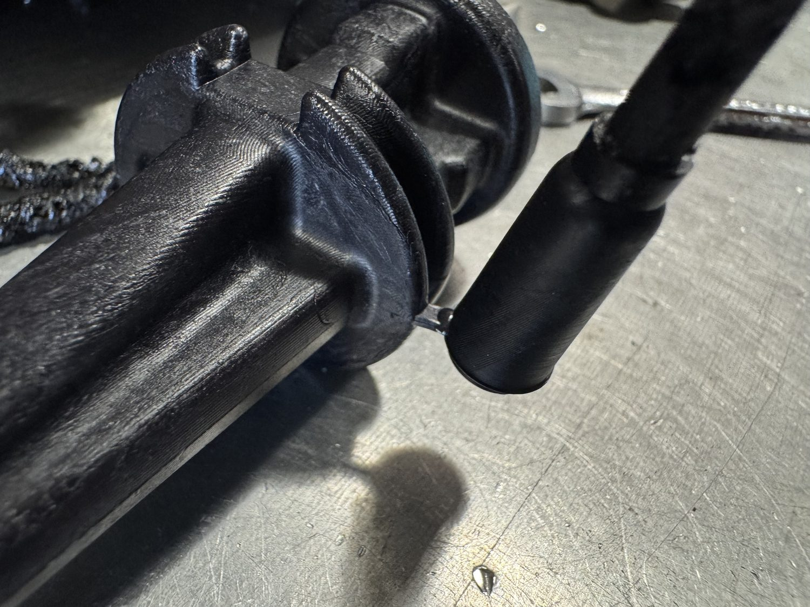

Timeline
Project Development
This project is filled from the available media, which currently shows a close-up of the molded screwdriver gate and runner area. I treated it as an injection molding process entry focused on understanding how the part, gate, and runner affect molding quality, trimming, and final part function. The current page gives the project a clean structure so more mold photos, process settings, defects, or final part images can be added later. Exact mold design details, material, cycle parameters, and measured results are still TBD.

-
Part review
Reviewed the Molded Screwdriver Part
Framed the screwdriver as an injection molding process-analysis project.
- Current media shows the molded part around the gate and runner detail.
- TBD: add full part and mold photos when available.
- TBD: add material, mold design, and cycle information.
-
Process detail
Inspected Gate and Runner Detail
Used the gate/runner close-up to document how the molded screwdriver was fed and separated.
- The available image highlights the manufacturing interface between runner, gate, and part.
- This is a useful anchor for later notes about fill quality, trimming, and defects.
- Exact process observations are TBD.
-
Next edits
Add Mold and Process Context
The page is ready for mold setup, final part, and process-result media when those files are added.
- TBD: add mold setup image.
- TBD: add full screwdriver image.
- TBD: add material, defects, cycle time, and final result notes.